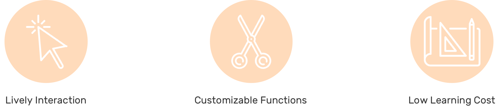
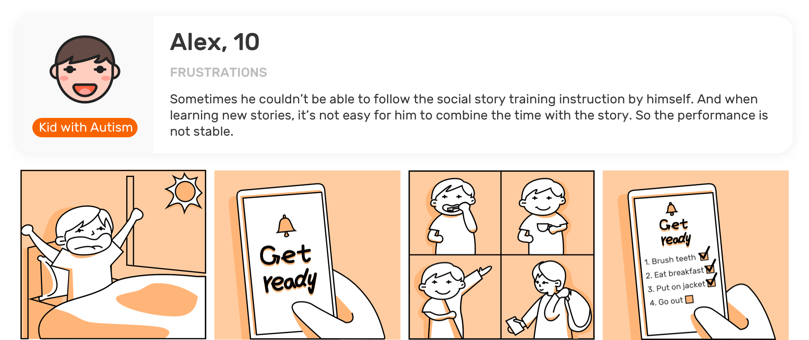
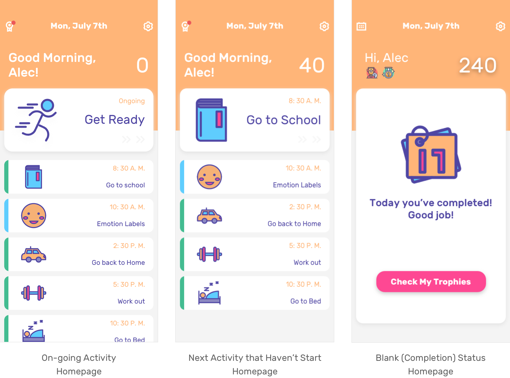
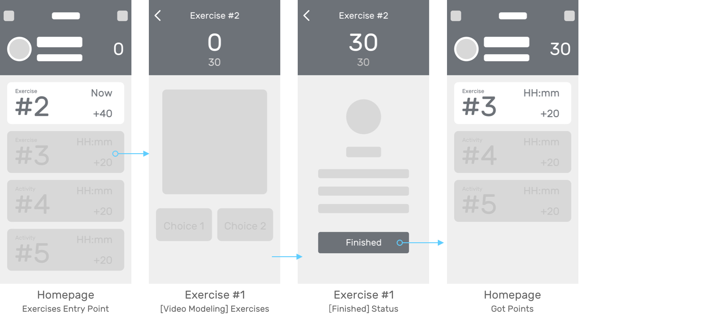

Faye Gong
I joined in Gaia in Dec, 2018 as Product Design Lead.
And this Social Sotry APP is the second product we are going to launch for the Autism Spectrum Disorder community.
Overview
PROJECT TYPE
Start-up Work
Real Business
TOOLS
Sketch
Principel
TEAM
Brent Chase(CEO & PM)
MY WORK
Research
Design
Test
What service does Gaia provide?
Gaia's mission is to create wearable smart apparel and an app system that monitors biometrics that are indicative of stress, wireless transmitting data to our associated app for early detection and notification of meltdowns. Now when a meltdown occurs, an alert is sent to the child's parent and any other caregivers as well as Alec of the the impending event.
Project Brief
The Challenge
How to digitialize a daily experience for autistic's caregivers?
Although the prescribed format was meant for high functioning people with basic communication skills, the format was adapted substantially to suit individuals with poor communication skills and low level functioning (e.g. children who are struggling with understanding social situations or when coping with change.

The Problem
Efforts taken by unstandardized training methods
Social Stories were devised as a tool to help individuals on the autism spectrum better understand the nuances of interpersonal communication so that they could interact in an effective and appropriate manner.

The Solution
A mobile experience for kids to practice their social skills
Gaia is trying to provide a digital online service for social story training tobridge the communication gap easier, get rid of the guesswork and paperwork.
The evidence shows that there has been minimal improvement in social interaction skills. However, it is difficult to assess whether the concept would have been successful if it had been carried out as designed.
Social stories are being used, though, in targeted ways to prepare individuals for social interaction and to prepare individuals with autism for public events.

Process

Understand
Design Research
How to dig deeper to find the real user's problem?
Our team members and I did several filed trips and in-person interveiws from December to March to discover user's needs, current pain points.

1. Who are going to use the product?
There are two main stakeholder emerged in research, kids who have autism, and their caregivers.
Persona | Kid, caregiver, and their typical day

Insights
Social training is helpful but currently costs a lot of caregiver's efforts.
2. What does a ideal social stories training process look like?

Insights
Technology involvement won't disturb or distract kids' learning process but help standardizing the process which cost less learning efforts.
3. What does the current competition look like?
Competitive Analysis
Currently, autistic caregivers are using printed paper cards or mobile app to help them build social habits and communication skills with their kids.
Paper cards are
1.Not easy to manage and store.
2. Sometimes they may lost one of them then couldn't make the story consistent
3. Sometimes a set of cards has many repetitive cards they had.

In the digital market, there are less competitors focus on provide a fluent product design. Actually it's more important to make a usable interface for autism kids because of their sensitivity.
In the APP Store, when search social story(stories),
1. There are only less than 5 results showed up which mostly cost more than $10.
2. Their interfaces are not well-designed and the content is highly standardized with the papercopy people could find online.
3.
Insights
The design opportunity is big since most influential competitors have poorly-designed product interface and interaction.
Generate Concept
Ideation
"
HMW
cdesign a friendly interface for daily based social stories practice for autism kids?
What it should inclued?
Design Requirments + Design Principels

The solution shoude have (1) lively user-app interaction, (2) customizable schecule function, (3) low learning cost/study (3) and allow for varied levels of comfort with unfamiliar touch.
Information Architecture

Design
#1 Social Stories and Exercise
Target User and Story
User flow 1
Reward points based story practice with real schedule

When at the activity time caregiver set, kid could see the currently on-going activity and tap it jump to Story page to finish the corresponding stories.
After finished stories, kid earns oints and back to the homepage.
Before the set time, kid tap the next story would see a pop-up to inform them it's not the time to go with this activity.
Layout and style 1
Activity Cards and list design
Why I go with this design is that
Homepage Design

Layout and style 2
Stories cards and list design

Why I go with this design is that
Social Stories Design
User flow 2
Excersice

When kid taps the exercises collection, it jumps to exercises list page. Take video-modeling as an example, when kid finishes it, kid earns the points and back to homepage. And the total points cut down.
#2 Stories and exercises management
Let's meet another persona!

User flow 3
Management
By entering password, parents would create typical stories, activities and add exercises for their kids.
And the calendar allows them to view, edit, delete activity.
Guidelines
Visual System

Design
Final Solution Showcase